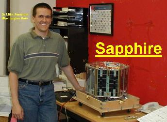

US Naval Academy Satellite Lab
US Naval Academy Satellite Lab
Bob Bruninga, WB4APR


 See Photos from USNA's annual exhibit at
the Smithsonian Udgar-Hazy Space Museum's Space Day.
See Photos from USNA's annual exhibit at
the Smithsonian Udgar-Hazy Space Museum's Space Day.
The USNA Satellite Lab primarily serves the USNA Aerospace Department
but also serves students,
faculty and staff throughout the Academy; including students in the various
Engineering and Weapons Departments, and even the
Midshipmen Amateur Radio Club.
The facility is operated by Bob Bruninga, the Senior Research Engineer under the
Director of the Aerospace Groundstation, CDR Jeff King, and Director of Astrounatuics
Dr. Tae Lim.
The lab supports 36 diffeent hands-on labs during the year and also as may as a dozen
year long Capstone student engineering projects that include small satellite development
construction and operation. The first 5 satellites are shown above.
The latest one called MIDstar
was launched in March 2007 and lead by Dr. Billy Smith.
This web page provides links to each of the
satellite projects and to our specialized LABsat student labs.
SATELLITE LABS: We conduct a series of labs for the Astronautics track (and a few
labs for the EE, IT, and Physics Departments as needed). Many labs are based on
our LABsats (photo below) which are similar to modules in some of
our actual satellites on orbit. This provides continuity from the hands-on student
activities in the lab to what they include in some of their actual spacecraft design projects.
See our LAB page.
OUR Eight Successful SATELLITE Projects: Below are the links to each of our satellite missions
that have successfully achieved orbit. The most active at this time are the
MIDSTAR and
ANDE-Operations pages.
PSAT-1: . An APRS AX.25 relay satellite also with PSK31 transponder - launched 20 May 2015
MIDSTAR: . Largest USNA Satellite to date. . Launched 9 March 2007. (Operational)
ANDE: . Atmospheric Neutral Density Experiment. . Launched 21 Dec 2006. (Operational)
RAFT: . Radar Fence Transponder. . Launched 21 Dec 2006. (5 Month mission complete)
PCSAT2: . A Solar Cell experiment and comms transponder. Launched to ISS on 26 July 2005 (returned in Sept 06)
PCsat: . . . An orbital GPS and communicaitons transponder. Launched 29 Sept 2001. (Still semi-operational)
Sapphire:
. A joint project with the Univ of Washington, St. Louis launched 29 Sept 2001.
REX-II: . .
The Radiation Experiment II Satellite operated by Prof Boden (July 99-2002).
ARISS: . . Our contribution to
the packet and APRS system on the International Space Station (summer 2004).

OTHER SATELLITE PROJECTS in work:
PSAT-2, an APRS relay satellite to fly in 2016 on STP-2 providing higher power to the Space APRS network.
QIKCOM-2, an APRS relay module to fly in 2016 on a host satellite from the ISS also supporting DTMF relay and Voice response
QIKCOM-1, an APRS relay module to fly in 2015 on a short-lived host satellite from the ISS
Suggested Student Satellite Projects
for Astros, EE's and WEPS majors.
MARScom Satellite An idea to fly a satellite for NAVY-MARS Communications Training
ParkinsonSAT Environmental Data Satellite .
For relaying data from ocean going student environmental buoys.
USNA Standard TC&C Transponder, for use on small simple spacecraft
NATS-WEB, Our first short-fuse design for a GEO ride on SEA-Launch

OTHER SATELLITE and COMMUNICATIONS PROJECTS:
NEMISIS(sp). A cubesat with tunable EMI receiver for locating Satellite Interference.
Science! An external student/outreach comm payload for the ISS.
STARSHINE-6: (Deferred). A PCsat style Telemetry/Command/COMM bus.
CUBESATS:
Some other potential satellite projects (just ideas)
YPSATCOM TRACKING:
GPS tracking and communications with our Boats on Summer cruises.
13th CO A/N Game FOOTBALL RUN: December 1999.
Satellite Lab Control Room: located in Rickover room 122.
Amateur Radio Experiments on the Space Station.

Our 12 Meter Dish
Satellite tracking antenna supports the following activities:
- See Satellite Feed Box
- SAIL
Satellite Artificial Intelligence Lab(currently innactive)
-
UFO-1
The Navy's "UHF Follow On" communications satellite.
- MOONBOUNCE:
Communications via radio reflections off the Moon
- TV/Teleconferencing : Occassionaly used for foreign
language TV feeds.
- AO-40 Satellite Rescue attempts to recover telemetry
One 2m portable dish is used for LAB demos
HF Antennas : For comms/GPS tracking of Academy boats
on summer cruise. (LIVE
MAP DISPLAY)
Amateur Satellite Tracking
of over a dozen amateur Satellites including the ISS and Shuttle
137 Mhz Beam : Pointed at ATS-3
, A 29 year old communications satellite serving scientists at the South
Pole .
GPS Antenna : A fixed GPS receiver
on the roof of Rickover constantly reports position and satellite data
to provide a live display of GPS
satellite positions and a typical plot of GPS
errors. Check out SGPS
for info on using GPS on Spacecraft or the main Coast
Guard GPS site for general info on GPS.
APRS Antennas : A number of antennas
receive mobile GPS position reports from the Naval Academy Boats and a
variety of other vehicles and networks using the APRS
Automatic Position Reporting System .
WEBMASTER: bruninga_at_usna.edu
{kind=link}
{kind=link}
{kind=link}
{kind=link}
{kind=link}